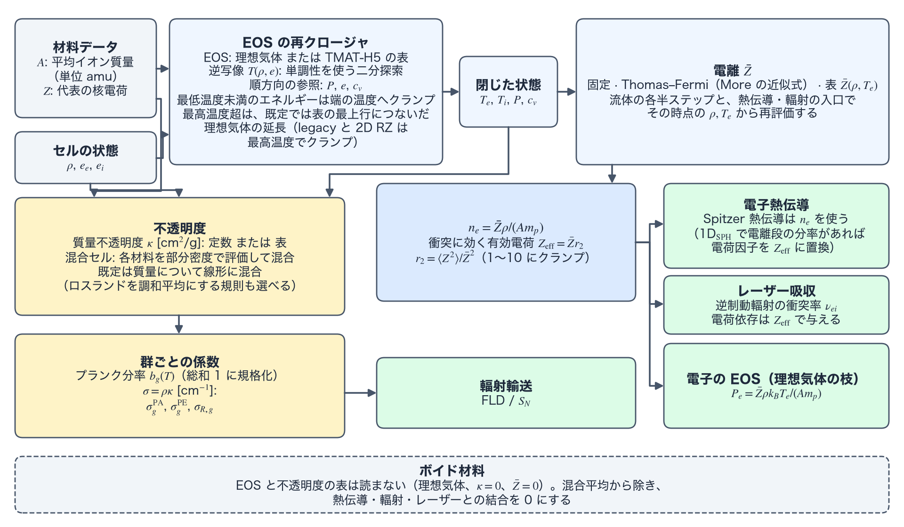

EOS・不透明度・電離 reference
TENRYU の材料クロージャ（material closure）は、材料組成 \(A,Z\)、状態方程式（equation of state、EOS）、平均電離度（mean ionization）、不透明度（opacity）を同じセルの状態へ結び付ける。解析的な 2 温度（two-temperature）の理想気体と TMAT-H5 の表形式 EOS、固定または状態に依存する \(\bar Z\)、定数または表形式の質量不透明度（mass opacity）を選び、電子数密度を熱伝導とレーザーへ、群ごとの係数とプランク分率（Planck fraction）を輻射輸送（radiation transport）へ渡す。この計算に固有の用語は用語の節で説明する。
物理機構
各時間発展の演算子が進めるのは保存量であり、物理が必要とするそれ以外の量 — \(P\)、\(T\)、\(c_v\)、\(\bar Z\)、\(\kappa\) — は、セルの状態から材料クロージャによって再構成しなければならない。高エネルギー密度（high-energy-density、HED）の物質は、ひとつのショットのなかでも冷たい固体から数 keV のプラズマまで巨大な範囲を横断し、不透明度も桁違いに変化する。したがって、解析式と表のどちらを使うかは、見通しのよさと忠実さのどちらを重視するかを材料ごとに決める選択になる。
解析的な基準となるのは、電子側とイオン側を独立に扱う 2 温度の理想気体だが、実在する標的材料には \(P\)、\(e\)、\(c_v\) の TMAT-H5 の表を使う（TMAT-H5 は TENRYU の表形式物質フォーマットとその HDF5 コンテナで、リポジトリの docs/TMAT_H5_SPEC.md が仕様書である。用語参照）。流体側が閉じるのは温度ではなくエネルギーなので、逆写像 \(T(\rho,e)\) が中心的な役割を担う。再クロージャ（re-closure）のたびに、密度を固定した区間でエネルギーの行を単調性を利用して二分探索（binary search）し、\(\log T\) で補間する。GPU 上の経路は意図的にニュートン反復（Newton iteration）を使わない形にしてあり、頑健で決定論的、収束の分岐をもたない。表の最低温度より低いエネルギーは端の温度へクランプし、最高温度より高いエネルギーは、1D の既定の閉じ方ではクランプせず理想気体の延長で閉じる（理想気体 EOS と TMAT の表形式 EOS参照）。
平均電離度は、各物理を結ぶ結合の要である。平均電離度 \(\bar Z\) が \(n_e=\bar Z\rho/(A m_p)\) を定め、\(n_e\) は Spitzer の熱伝導（Spitzer conduction）、逆制動輻射（inverse bremsstrahlung、IB）の衝突率、電子側の EOS、輻射と物質の結合のすべてに入る。TENRYU は、固定の \(\bar Z=Z\)、Thomas–Fermi モデル（Thomas–Fermi model）に対する More の近似式、または表形式の \(\bar Z(\rho,T_e)\) を選べる。動的なモデルは熱伝導と輻射の各演算子の入口で評価し直されるため、各演算子は開始時の状態と整合した電離度を見る。衝突率の重みは \(Z\) ではなく \(Z^2\) であり、電離段の分率が得られる場合は \(r_2=\langle Z^2\rangle/\bar Z^2\) によって、Spitzer と SNB（Schurtz–Nicolaï–Busquet の非局所（nonlocal）電子熱伝導 — 伝導参照）の電荷因子を、衝突に効く有効電荷（\(Z_{\rm eff}=\bar Zr_2\)）へ拡張する。
輸送が必要とするロスランド平均（Rosseland mean）は、流束で重み付けした \(1/\kappa_\nu\) の平均（調和平均、harmonic mean）である。輻射は全周波数チャネルを並列に流れるので、並列抵抗の合成と同じく最も通りやすい経路 — 透明なスペクトルの窓（spectral window）— が全体を支配する。一方、放出と吸収が必要とするプランク平均（Planck mean）は放出で重み付けした \(\kappa_\nu\) の線形平均であり、こちらは強いスペクトル線（spectral line）が支配する。混合セル（mixed cell）の規則 "harmonic_mass_R" も同じ物理に従い、プランク不透明度は吸収体の足し合わせとして質量について線形に、ロスランド不透明度は透明な経路の足し合わせとして調和的に混合する。プランク分率 \(b_g(T)\) は、有限の群構造（group structure）の上で総和を 1 に閉じ、群の外へこぼれる裾を欠損として診断する（群、プランク分率、裾の欠損）。放出不透明度のブロックをもたない IONMIX（衝突輻射コード Ionmix の .cn4 形式の物質表）の表は、LTE（local thermodynamic equilibrium、局所熱力学平衡）の表とみなし、警告を出して \(\kappa^{PE}=\kappa^{PA}\) とする。
材料から輸送係数まで
Material.A はイオン 1 個あたりの平均質量 [amu]、Material.Z は平均原子番号または代表値である。単一材料では \(n_i=\rho/(A m_p)\)、\(n_e=\bar Z n_i\) となる。ここで \(m_p=1.6726\times10^{-24}\) g は陽子質量である。TENRYU は原子質量単位（atomic mass unit、amu）を意図的に \(m_p\) と同一視する。これは物理定数の組を固定する取り決めであり、真の amu との約 0.73% のずれは材料の実効 \(A\) に吸収される。化合物の \(A\) は分子量ではなく、数分率（number fraction）で平均したイオン質量である。たとえば原子数が等しい CH は 6.5、CD は 7 になる。この規約により、EOS と不透明度の表の密度軸、および下流の衝突係数が、同じ粒子数密度に対応する。
EOS が圧力・温度・比熱を閉じ、電離モデルが \(\bar Z\) を与える（図A）。そこから得られる \(n_e\) が、電子熱伝導とレーザーの逆制動輻射吸収に使われる。もう一方の枝である不透明度は、温度に依存するプランク分率と組み合わされ、流束制限拡散（flux-limited diffusion、FLD）または離散座標法（discrete ordinates method、\(S_N\)）の輻射輸送で使う群ごとの係数になる。この分離により、同じ材料の状態を共有しながら、EOS、衝突輸送、輻射係数を個別に検証できる。
- \(A\) — 数分率で平均したイオン質量で、CH は 6.5、CD は 7 である。この密度軸の規約により、EOS、不透明度、粒子数密度が一貫する。
- \(n_e=\bar Z\rho/(A m_p)\) — 組成と電離度から、衝突輸送と結合係数へ渡される電子数密度である。
- \(\kappa\) と \(\sigma=\rho\kappa\) — 質量不透明度は cm²/g で保持し、輸送では別の量である長さあたりの不透明度 cm⁻¹ を使う。
cv_e_override— 単位が erg/(cm³·eV) の体積比熱である。同じ定数を Fleck 係数（Fleck factor。輻射の放出・吸収を陰的に結合する線形化の係数 — FLD参照）にも渡す検証用の規約であり、材料を合わせ込むための調整つまみではない。- \(r_2=\langle Z^2\rangle/\bar Z^2\) — 衝突用の \(Z_{\rm eff}=\bar Zr_2\)（用語）を作る前に、1〜10 の範囲へクランプする。このクランプは物理ではなく数値安全策（numerical safeguard）である：\(r_2\ge1\) は分散比なので構成上成り立ち、上限 10 は退化・破損した分率表に対して補正を抑える。
- \(10^{-20}\) cm²/g —
"harmonic_mass_R"のロスランド調和平均で 0 除算が起きないよう、混合の前に各成分へ課す床（floor。床・クランプ・数値安全策参照）である。あらゆる物理的不透明度より何桁も小さく、成分が厳密に 0 のときに調和結合を有限に保つためだけに存在する。

この計算で使う用語
材料クロージャは、保存量からセルごとの圧力・温度・電離度・不透明度を作り直す。その過程にある再クロージャの手順、材料の表の形式、群と温度の格子、混合セルの扱い、衝突に効く電荷は、TENRYU の実装に固有の意味で使うので、ここにまとめて定義する。
再クロージャと逆写像
再クロージャ（re-closure）は、演算子が状態を変えたあとに、\((\rho,e)\) から EOS で温度 \(T\)、圧力 \(P\)、比熱 \(c_v\) を求め直すことである。クロージャ（closure）は、保存量からこれらを決める関係で、この頁では EOS・平均電離度・不透明度を合わせて材料クロージャと呼ぶ（演算子分割と再クロージャの規律）。流体が時間発展させるのは温度ではなくエネルギーなので、熱伝導・輻射・レーザーが読む \(T\)、\(P\)、\(c_v\) は、エネルギーが変わるたびに作り直す必要がある。この頁の手順では、流体の各半ステップのあとに、逆写像で \(T\) を復元し、順方向の参照で \(P\) と \(c_v\) を評価する（クロージャを呼ぶ場所と順序）。
逆写像（inverse map）は、密度 \(\rho\) とエネルギー \(e\) から温度 \(T(\rho,e)\) を求める操作で、再クロージャの最初の段である。表形式の EOS では、\(e(\rho,T)\) の表を温度について逆に引く。密度の区間（density bracket。コードの名前は RhoBracket）は、表の密度の格子で、参照する密度をはさむ隣り合う 2 点の添字と補間の重みの組である。GPU 上の経路は、この区間の上でエネルギーの行を、エネルギーが温度とともに増えることを利用して二分探索し、温度の添字を決めたうえで、隣り合う添字のあいだを \(\log T\) で補間する。ニュートン反復を使わないので、結果は決定論的で、収束の判定に伴う分岐がない。同じ密度の区間を、そのあとの \(P\)、\(e\)、\(c_v\) の順方向の参照が共有する。
表の端の外のエネルギーの扱いは閉じ方で決まる。Numerics.hydro.eos_closure_mode の既定は "energy_authoritative"（1D。進化させたエネルギーを正とし、書き換えない）で、"legacy" と 2D RZ の閉じ方は表の端へクランプする。Studio はこのキーを書き出さないので、Studio のデッキもパーサーの既定を使う（詳細は理想気体 EOS と TMAT の表形式 EOS）。逆写像の結果は、保存するエネルギーと、熱伝導・輻射が読む温度の整合に効く。
TMAT-H5
TMAT-H5は、TENRYU の物質表の HDF5 形式（ファイル拡張子 .tmat.h5）である。仕様書はリポジトリの docs/TMAT_H5_SPEC.md にある。1 つのファイルが 1 つの材料を表し、単位は cgs + eV に固定で、実行時に単位を換算しない。IONMIX（Fortran の非整形バイナリ）や SESAME（ASCII）の表を、単位・組成・来歴を自分で記述する 1 つの形式に置き換えるために作られ、EOS の表と不透明度の表を別々の格子に置け、片方だけのファイルも読める。
ファイルは次の塊から成る。材料の組成（/material。元素ごとの原子番号 \(Z\)、質量 \(A\)、質量分率）。EOS の表（/eos）は、イオン数密度 \(n_i\) [cm⁻³] と温度 \(T\) [eV] の格子の上で、平均電離度 \(\bar Z\)、イオンと電子の圧力 \(P_i\)、\(P_e\) [dyne/cm²]、比エネルギー \(e_i\)、\(e_e\) [erg/g] を与え、比熱 \(c_{v,i}\)、\(c_{v,e}\) [erg/(g·eV)] は任意である。不透明度の表（/opacity）は、群・イオン数密度・温度の 3 軸の上で、ロスランド平均 \(\kappa_R\)、プランク吸収 \(\kappa^{PA}\)、プランク放出 \(\kappa^{PE}\) [cm²/g] を与え、@is_lte が 1 なら LTE の表である。電離段の分率（/ionization）は任意である。
密度軸がイオン数密度なので、実行時に \(\rho=n_iAm_p\) で質量密度へ変換する。材料ごとに eos.model="tmat" と opacity.model="tmat" で選ぶ（namelist による制御）。EOS の表からは、イオンと電子の和として全物質の表も作る。電離段の分率は、衝突に効く有効電荷の表に使う（用語）。
群、プランク分率、裾の欠損
群（group）は、輻射輸送が光子のエネルギーを分ける区間 \([E_{g-1},E_g)\) で、\(g=1,\dots,G\) と数える。境界 \(E_0<E_1<\dots<E_G\) [eV] は Radiation.group_bounds_eV（数値のリスト、または "log_uniform"）で、群の数 \(G\) は Radiation.groups（既定 1）で与える。群が 1 つならグレイ（gray）の計算になる。不透明度の係数も輻射のエネルギーも、群ごとに決まり、群ごとに輸送される。
プランク分率（Planck fraction） \(b_g(T)\) は、温度 \(T\) の黒体スペクトルのうち、群 \(g\) に入る割合である（式はPlanckTable と群の被覆に関する診断）。輻射の放出の源を群へ配る重みとして使い、群についての和が 1 になるように規格化する。初期化のとき、温度の格子（planck_fraction.compute_N_T 点。既定 200。温度の範囲を対数等間隔に刻む）の上で計算して表にする（PlanckTable）。温度の範囲は Radiation.compute_T_range_eV で与える。省略すると、有効な材料の電子 EOS の表の範囲、次に不透明度の表の範囲、最後に [0.01, 1000] eV の順で導く。輻射を有効にした Studio のデッキは compute_T_range_eV を必ず書き出す（既定の群境界 [0.1, \(10^5\)] eV では [0.1, \(10^5\)] eV）。
裾の欠損（tail deficit） \(\delta(T)=1-\sum_g b_g^{raw}(T)\) は、群の全範囲 \([E_0,E_G]\) の外にこぼれる黒体スペクトルの割合である。\(b_g^{raw}\) は規格化する前の \(b_g\) である。光子エネルギーの範囲が有限なので、\(b_g^{raw}\) の和は 1 未満になり得る。規格化は欠けたスペクトルを復元せず、外にこぼれた分を群の中へ配り直すだけなので、群の範囲が狭いと、輻射の放出が実際より群の範囲に偏る。そこで初期化のとき、温度の格子の全体で \(\delta(T)\) の最大値を調べて記録する。\(\delta\) が \(10^{-3}\) を超える温度が表のすべての温度に及ぶときは警告し、そうでないときは、\(\delta\le10^{-3}\) となる温度の範囲と最大値を情報として記録する。群が 1 つのときは \(b_1=1\) で、欠損は調べない。
混合セル、支配材料、部分密度
混合セル（mixed cell）は、2 つ以上の材料が体積を分け合うセルである。材料 \(m\) の体積分率 \(f_m\)（Geometry.volfrac を正規化した値で、総和は 1）は、セルの体積のうち材料 \(m\) が占める割合を表す。ボイド（定義）は真空でイオンをもたないので、材料の平均には入れず、ボイドでない材料の体積分率の和で割り直す。ボイドでない材料のうち 1 つだけが体積分率をもつセルを、純セル（pure cell）と呼ぶ。
支配材料（dominant material）は、セルのなかで体積分率が最大の、ボイドでない材料である。体積分率が等しいときは番号の小さい材料、ボイドでない材料の体積分率が正でないセルでは先頭のボイドでない材料とする。純セルでは、支配材料が不透明度の表を選ぶ。支配材料が NLTE（non-LTE）の表の材料であるセルは、混合セルでも、その材料の NLTE の計算が支配材料の表だけで埋める（支配材料近似）。
部分密度（partial density）は、材料 \(m\) の質量をその材料が占める体積で割った、材料 \(m\) 自身の密度 \(\rho_m=\rho\,w_m/f_m\) である。\(w_m\) は質量分率（材料ごとの質量を追跡しないときは体積分率）。材料の表は密度の関数なので、混合セルでは、それぞれの表を、セルの密度ではなくその材料の部分密度で引く。\(f_m\le10^{-12}\) の材料は、部分密度をセルの密度とする（0 除算を避けるため）。既定の線形の規則 Materials.opacity_mix_rule="linear_mass"（Studio はこのキーを書き出さない）では、混合セルの長さ不透明度は \(\sigma=\rho\sum_mw_m\kappa_m(\rho_m,T_e)\) になる（不透明度と材料の混合）。
衝突に効く有効電荷と混合セルの平均
衝突に効く有効電荷（collisional effective charge） \(Z_{\rm eff}\) は、イオンの電荷の 2 乗平均を平均で割った \(Z_{\rm eff}=\langle Z^2\rangle/\langle Z\rangle\) である。\(\langle Z\rangle=\bar Z\)、\(r_2=\langle Z^2\rangle/\bar Z^2\) と置くと、\(Z_{\rm eff}=\bar Zr_2\) と書ける。電子とイオンの衝突率は \(Z\) ではなく \(Z^2\) に比例して効くので、同じ \(\bar Z\) でも、電荷の異なるイオンが混ざるほど衝突が強い。\(r_2\) は分散比なので \(r_2\ge1\) が構成上成り立ち、TENRYU は 1〜10 にクランプする。たとえば完全電離した CD（炭素と水素が 1:1）では、\(\bar Z=3.5\) に対し \(Z_{\rm eff}=(36+1)/(6+1)\approx5.29\)、\(r_2\approx1.51\) である。
\(Z_{\rm eff}\) の使い道は 2 つある。熱伝導では、TMAT に電離段の分率があるとき、Spitzer 熱伝導と SNB の電荷因子を \(Z_{\rm eff}\) に置き換える（1D_SPH 専用）。レーザーの逆制動輻射では、吸収係数の電荷への依存を \(\bar Z\) ではなく \(Z_{\rm eff}=\bar Zr_2\) で与え、\(r_2\) の求め方を Laser.ib.zeff_model が選ぶ。値は auto（既定。Studio はこのキーを書き出さない）、off（\(r_2=1\)）、table（TMAT の電離段の分率から作った表）、sequential_strip（後述）である。
混合セルの平均 \(\bar Z_{\rm eff}\)・\(A_{\rm eff}\)（mixture averages）は、混合セルで、材料ごとの値を混ぜてセルの代表値にする平均である。名前が似ているが、上の \(Z_{\rm eff}\) とは別の量である。\(A_{\rm eff}\) は体積分率で重み付けした調和平均で、\(1/A_{\rm eff}=\sum_mf_m/A_m\) である。\(\bar Z_{\rm eff}\) は、材料ごとの平均電離度 \(\bar Z_m\) を、イオンの数 \(f_m/A_m\) で重み付けした平均 \(\bar Z_{\rm eff}=\sum_m(f_m/A_m)\bar Z_m\big/\sum_m(f_m/A_m)\) である。和は、ボイドでない材料にだけ取り、その体積分率の和で割り直す。この重みにより、\(n_e=\rho\bar Z_{\rm eff}/(A_{\rm eff}m_p)\) は、各材料の \(f_m\rho\bar Z_m/(A_mm_p)\) の和に等しくなる。熱伝導の係数と、電子とイオンのエネルギー交換は、この \(n_e\) と \(A_{\rm eff}\) をセルの値として読む。
逐次剥離
逐次剥離（sequential stripping）は、複数の元素から成るプラズマで、平均電離度 \(\bar Z\)（原子 1 個あたりの自由電子数の平均）を、元素ごとの電荷 \(z_s\) へ配る近似である。原子番号の小さい元素から順に、電子を使い切るまで完全電離させ、残った電子を次の元素へ回す。元素 \(s\) の数分率を \(x_s\)、原子番号を \(Z_s\)（小さい順）として、残りの電子数を \(R\)（初めは \(\bar Z\)）とおき、\(z_s=\min(Z_s,\,R/x_s)\)、\(R\leftarrow R-x_sz_s\) を順に適用する。完全電離の極限で厳密になる。
得られた \(z_s\) から \(Z_{\rm eff}=\sum_sx_sz_s^2\big/\sum_sx_sz_s\) を作り、比 \(r_2=Z_{\rm eff}/\bar Z\) を 1〜10 にクランプして、\(Z_{\rm eff}=\bar Zr_2\) をレーザーの逆制動輻射の吸収係数に使う。元素は Laser.ib.species=[[Z, x], …] で与える。元素は 4 つまでで、1 つだけなら \(r_2=1\) である。原子番号は狭義に増加し、\(x_s>0\) で、総和は [0.99, 1.01] に入らなければならない。Laser.ib.zeff_model="sequential_strip" には species が必須である。auto では、species の指定があるとき、または 1D 球対称でボイドでない材料のすべてが共通の多種組成をもつときに、この近似を選ぶ（平均電離度と衝突に効く有効電荷）。
理想気体 EOS と TMAT の表形式 EOS
eos.model="ideal_gas" は、電子とイオンを独立に閉じる解析的な 2 温度 EOS である。既定の単原子気体では \(\gamma=5/3\) とし、イオンは \(P_i=\rho k_BT_i/(A m_p)\)、電子は \(P_e=\bar Z\rho k_BT_e/(A m_p)\) に従う（\(k_B\) は cgs + eV 単位系の常として eV_to_erg である）。これら温度側の枝が一次的なクロージャで、設定した ideal_gas.gamma による圧力–エネルギーの形 \(P=(\gamma-1)\rho e\) は同じ理想気体の等価な表現である — 枝ごとに、イオンは \(e_i=k_BT_i/[(\gamma-1)Am_p]\)、電子は \(e_e=\bar Z\,k_BT_e/[(\gamma-1)Am_p]\) が成り立つため、\(\bar Z\) が一定のとき両形式は構成上整合し、発展したエネルギーから閉じ直すときに後者を使う。温度に依存する \(\bar Z\) を選んだ場合も、電子の比熱は、その時点の \(\bar Z\) を使う \(\bar Z k_B/[(\gamma-1)Am_p]\) のままで、\(T_e\,d\bar Z/dT_e\) の寄与は含まない（既知の制限である）。
cv_e_override は、解析解が一定の電子体積比熱を要求する Marshak 波（Marshak wave）や Su–Olson 問題（Su–Olson problem）の検証のためのものである。単位は erg/(cm³·eV) であり、通常の EOS の表が返す質量あたりの比熱 \(c_v\) [erg/(g·eV)] とは \(\rho\) 倍だけ異なる。指定すると、電子の \(C_{v,e}\) を一定値に置き換え、輻射側の Fleck 係数も同じ値を読む。一般の物質モデルを合わせ込むための自由パラメータではなく、\(C_v\) 一定という検証条件を表すためのキーである。
eos.model="tmat" は、TMAT-H5 のイオン・電子・全物質（イオンと電子の和）の表から \(P(\rho,T)\)、\(e(\rho,T)\)、\(c_v(\rho,T)\) を構築する。TMAT の主たる密度軸であるイオン数密度（ion number density）\(n_i\) は \(\rho=n_i A m_p\) で質量密度へ変換し、実行時は \((\log\rho,\log T)\) の面上で双線形補間（bilinear interpolation）する。範囲外の参照は表の端へクランプする。温度の上端の扱いは次の段落に書く。正でない \(c_v\) には床を課し、表を作るときに 1 回だけ警告する。
流体が更新した \(e\) から温度を閉じ直す逆写像は、ニュートン反復ではない。密度を固定した区間の上でエネルギーの行を単調性を利用して二分探索し、隣り合う温度の添字のあいだを \(\log T\) で補間して \(T(\rho,e)\) を返す。同じ RhoBracket を逆写像と、その後の \(P,e,c_v\) の順方向参照が共有するため、ひとつの密度位置で往復のクロージャを構成できる。目標とするエネルギーが表の最低温度での値を下回るときは、端の温度へクランプする。最高温度 \(T_{top}\) での値 \(e_{top}\) を上回るときは、閉じ方によって扱いが違う。1D の既定の閉じ方（Numerics.hydro.eos_closure_mode="energy_authoritative"。進化させたエネルギーを正とする閉じ方）は、クランプせず、\(T_{top}\) の行につなげた理想気体の延長で閉じる。すなわち \(e=e_{top}+c_{v,top}(T-T_{top})\)、\(P=P_{top}T/T_{top}\)、\(c_v=c_{v,top}\) とし（添字 top は \(T_{top}\) での表の値）、進化させたエネルギーは書き換えない。"legacy" の閉じ方と 2D RZ の閉じ方は \(T_{top}\) でクランプし、"legacy" では超過分のエネルギーが表の値に置き換わって失われる。ただし低温平衡構成則（Numerics.hydro.T_start_inactive_cells="cold_equilibrium"）の逆写像は例外で、補正が消えていく温度範囲では解を区間で挟んだニュートン法（bracketed Newton method）を使う。
平均電離度と衝突に効く有効電荷
Materials.zbar.model の既定である fixed は、Materials.zbar.fixed_value（既定は未指定）を与えなければ \(\bar Z=Z\) とし、完全電離（full ionization）を仮定する。0 以上の fixed_value を与えると、その値をボイドでないすべてのセルの \(\bar Z\) にする。状態に依存する選択肢は、Thomas–Fermi 電離度に対する More の近似式（文献 [2] の Table IV。相似変数（similarity variable）\(\rho/(ZA)\) と \(T_e/Z^{4/3}\) で表す。QEOS（quotidian equation of state）[1] の Thomas–Fermi の相似則と同じ変数である）を用いる thomas_fermi と、\(\bar Z(\rho,T_e)\) を補間する tabular である。動的なモデルは流体の各半ステップと熱伝導・輻射の各演算子の入口（1D ではレーザー演算子の前も）で、その時点の \((\rho,T_e)\) から評価し直される。したがって、流体による圧縮後の電離は熱伝導へ、熱伝導後の温度変化は輻射のクロージャへ反映される。
TMAT のファイルが任意項目である /ionization ブロックに元素ごとの電離段（charge state）の分率をもつ場合、単一の \(\bar Z\) だけでは失われてしまう衝突電荷のモーメントも利用できる。分率から \(r_2=\langle Z^2\rangle/\bar Z^2\) を作り、1〜10 にクランプしたうえで、Spitzer 熱伝導と SNB の電荷因子を \(\bar Z r_2=Z_{\rm eff}\) に置き換える。表がなければ、この補正は働かない。表からモーメントを取るこの経路は 1D_SPH に限られる。材料が複数あるデッキ（deck）では各セルがその材料の分率表を使い、表のない材料のセルには補正がかからない。
ここで、材料側の zbar.model と、レーザーの逆制動輻射吸収に使う Laser.ib.zeff_model は別々の選択である。後者の既定である auto は構築時に解決される。TMAT の電離表があれば table になる。表がなく 1D 球対称であれば、Laser.ib.species の指定があるか、ボイド（void。定義）でない材料すべてが共通の多種組成（TMAT の組成。CD なら C と H）をもつ場合に、それを種のリストとする sequential_strip（逐次剥離）になる。それ以外は off になる（1D 球対称で混合物なら警告）。ボイドでない材料が 2 つ以上ある 1D 球対称のデッキでは、auto を材料ごとに解決する。その材料の電離表があれば table、種の指定か 2〜4 種の TMAT 組成があれば sequential_strip、それ以外は off である。したがって「固定の \(\bar Z\)」と「自動の \(Z_{\rm eff}\)」は競合する同じキーではなく、電子数密度と、多種イオンによる衝突補正をそれぞれ制御する。
不透明度と材料の混合
opacity.model="constant" は、吸収 kappa_a と散乱 kappa_s を cm²/g で与え、すべての輻射群へ同じ値を割り当てる。1D の \(S_N\) ソルバは kappa_s を物理的な散乱の不透明度として使う。FLD は物理散乱をもたないので、kappa_s が 0 より大きいと入力の誤りとして拒否する。2D の \(S_N\) ソルバは物理散乱をゼロとして扱い、kappa_s を使わない。表形式のモデルは、密度・温度・群に依存するロスランド平均 \(\kappa_R\)、プランク吸収 \(\kappa^{PA}\)、そして利用できる場合はプランク放出 \(\kappa^{PE}\) を読む。内部の輸送係数へは \(\sigma=\rho\kappa\) によって cm⁻¹ に変換する。放出不透明度のブロックをもたない IONMIX の表は、LTE の表とみなし、警告を出して \(\kappa^{PE}=\kappa^{PA}\)（キルヒホッフの法則、Kirchhoff's law）とする。
混合セルでは Materials.opacity_mix_rule が材料の不透明度の混合則（mixing rule）を決め、重みは質量分率（材料ごとの質量を追跡しない場合は体積分率）である。既定の "linear_mass" は、プランクとロスランドの両方を \(\kappa_{P,mix}=\sum_\alpha f_{m,\alpha}\kappa_{P,\alpha}\) のように線形に混合する。"harmonic_mass_R" はプランクを線形のまま、ロスランドを調和平均 \(1/\kappa_{R,mix}=\sum_\alpha f_{m,\alpha}/\kappa_{R,\alpha}\) で混合し、"max" は両方とも材料の最大値をとる。非線形の 2 つの規則は 1D だけにあり、2D は "linear_mass" だけを受け付ける。診断用の環境スイッチ TENRYU_MM_OPACITY_MIX=harmonic は、定数不透明度を両方とも調和平均で混合する。
材料ごとの表不透明度（多材料 1D）
1D_SPH の多群拡散デッキでは、ボイドでない各材料に固有の tmat 不透明度表 — LTE の表と、吸収とは独立の放出不透明度をもつ非 LTE（non-LTE、NLTE）の表のいずれも — または定数を指定できる。table_nlte（IONMIX の表）、power_law、freq_dep_marshak も材料ごとに指定でき、sn_transport のデッキも同じ材料ごとのモデルを受け付ける。純セルでは体積分率が最大の支配材料が表を選び、その群ごとの不透明度をセルの \((\rho,T_e)\) で補間する。界面の混合セルは寄与材料をすべて厳密に合成する — 既定の線形の規則では \(\sigma = \rho \sum_m w_m \kappa_m(\rho_m, T_e)\)、重み \(w_m\) は質量分率（なければ体積分率）、各材料の表はその部分密度（partial density） \(\rho_m = \rho\,w_m/f_m\) で評価する。NLTE が支配材料のセルだけは NLTE カーネルが支配材料近似で埋める。2D では、材料が複数ある \(S_N\) のデッキがボイドでない材料すべてに定数不透明度を要求する。2D の FLD は、各材料の不透明度（モデルは材料ごとに選べる）を部分密度で評価して混ぜる。混合則は "linear_mass" だけである。
PlanckTable と群の被覆に関する診断
群 \(g=[E_{g-1},E_g)\) のプランク分率は、黒体スペクトルの全積分に対する、その群のなかでの積分の割合である。
$$ b_g(T)=\frac{15}{\pi^4}\int_{E_{g-1}/T}^{E_g/T}\frac{x^3}{e^x-1}\,dx. $$planck_fraction.method="compute" では、初期化時に温度の格子上でこの積分を評価し、実行時の PlanckTable は、累積分率（cumulative fraction。またはその補数の裾）の対数を、その厳密な傾きとともに \(\ln T\) の三次 Hermite 多項式（cubic Hermite polynomial）で補間し、\(b_g\) を隣り合う値の差として求める（総和は構成上 1 になる）。光子エネルギーの定義域が有限であるため、素の重みの総和は 1 未満になり得る。そこで保存に使う重みは \(\sum_g b_g=1\) へ規格化し直す。ただし規格化は、不足しているスペクトルを復元するものではない。そのため裾の欠損 \(\delta(T)=1-\sum_g b_g^{raw}(T)\) を保持し、温度格子全体での最大値を初期化時に報告する。表のどの温度でも欠損が \(10^{-3}\) を超えるときは警告を出し、そうでないときは、欠損が \(10^{-3}\) 以下になる温度の範囲と欠損の最大値を、情報として記録する。
compute_T_range_eV は、このプランク表の温度軸である。省略した場合は、有効な材料の電子 EOS の表の範囲、次に不透明度の表の範囲、最後に [0.01, 1000] eV の順で導く。輻射を有効にした Studio のデッキは compute_T_range_eV を必ず書き出し、群境界の下端と 0.1 eV の小さい方から、群境界の上端と \(10^5\) eV の大きい方までとする。実行時の温度が範囲外なら、端点の値へクランプする（外挿しない）。範囲外の参照の回数と超過率は記録しない。警告が出るのは、輻射の Marshak 境界の駆動温度 \(T_r\) について \(b_g\) をホスト側で引く経路だけで、初回の 1 回に限る。この温度軸は光子の群境界 \([E_0,E_G]\) とは別の量である。群境界を "log_uniform" で生成する場合と、群境界も表の群構造も与えない場合は、群境界がこの温度範囲から対数等間隔に作られる（下端は \(10^{-3}\) eV 以上にする）ので、二つの範囲は一致する。不透明度の表の群構造や、明示した group_bounds_eV を使う場合は、二つの範囲は独立である。群境界は想定するプラズマのスペクトルを覆うように、プランク表の温度軸は補間に必要な温度を覆うように、それぞれ設計すること。
クロージャを呼ぶ場所と順序
初期化。材料の表を読み込み、設定された Python の関数を表にして設定を凍結（freeze）し、輻射の群境界の上で
PlanckTableを構築する。流体の各半ステップ後の再クロージャ。時間発展した \((\rho,e)\) から逆写像で \(T\) を復元し、同じ密度の区間を再利用して \(P\) と \(c_v\) を順方向に評価する。
熱伝導の入口。動的な \(\bar Z\) を更新し、\(n_e=\bar Z\rho/(A m_p)\) を作り、その入口の状態から伝導率を評価する。
輻射の入口。\(\bar Z\) と \(Z_{\rm eff}\) を更新し、\((\rho,T_e)\) で \(\kappa_R\)、\(\kappa^{PA}\)、\(\kappa^{PE}\) を評価し、各質量不透明度を \(\sigma=\rho\kappa\) へ変換して \(b_g(T_e)\) を評価する。
材料ごとの寄与の混合。混合セルでは、材料ごとの不透明度を
Materials.opacity_mix_ruleに従って混合し、各材料の表はその部分密度で評価する。支配材料が NLTE のセルは、その材料の NLTE 係数で埋める。安全策を適用する。正でない \(c_v\) には床を課し（表を作るときに 1 回だけ警告する）、表の定義域の外の参照には端点の値へクランプし、ロスランド不透明度には床を課す。1D の既定の閉じ方では、エネルギーが表の最高温度での値を超えてもクランプせず、理想気体の延長で閉じる（理想気体 EOS と TMAT の表形式 EOS参照）。
namelist による制御
以下は、材料クロージャに直接関係する設定の抜粋である。検証規則の全体は namelist リファレンスを参照のこと。
| キー | 値・既定 | 用途 |
|---|---|---|
Material.A, Material.Z | 材料ごとに指定 | 平均イオン質量 [amu] と代表的な核電荷。\(n_i\)、\(\bar Z\)、\(n_e\) の基礎になる。 |
eos.model | ideal_gas（既定）| tmat | 解析的な 2 温度クロージャ、または TMAT-H5 の表形式 EOS。このほか sesame（SESAME の表。Los Alamos 国立研究所の状態方程式ライブラリ）、ionmix（IONMIX の表）、power_law_te（べき乗則の電子エネルギーを初期化のときに表にした検証用のモデル）も受け付ける。Studio は ideal_gas と tmat だけを書き出す。 |
ideal_gas.gamma | 5/3 | 理想気体の断熱指数（adiabatic index）。ソルバーが要求するのは \(\gamma>1\) だけで、Studio は \(1<\gamma\le3\) に限る。 |
eos.cv_e_override | None | 検証用の、一定の電子体積比熱 [erg/(cm³·eV)]。有限で 1.0 以上でなければならない。 |
opacity.model | constant（既定）| tmat | table_nlte | ionmix | power_law | freq_dep_marshak | free_free | 群によらず一定の係数（constant）、表形式の係数（tmat は TMAT-H5 の表、table_nlte は衝突輻射コード Ionmix の .cn4 形式「IONMIX」の表。ionmix は、放出と吸収の不透明度が一致する LTE の IONMIX の表を table_nlte と同じ経路で扱う）、べき乗則（power_law）、周波数依存の Marshak 検証問題用の解析不透明度（freq_dep_marshak）、自由–自由吸収（free-free absorption。free_free、2D の FLD だけ）。sesame は受け付けるが未実装のため、入力の誤りになる。none は廃止予定で、kappa_a と kappa_s が 0 の constant に読み替える。Studio は constant と tmat だけを書き出す。 |
kappa_a, kappa_s | 0.0 / 0.0 | 定数の吸収・散乱の質量不透明度。kappa_a は省略すると警告を出し、0（透明な媒質）になる。kappa_s は \(S_N\) だけが使い、FLD では 0 より大きい値が拒否される。 |
opacity.units | "cm2_per_g" | 質量不透明度の固定された単位。変更できない。 |
Materials.opacity_mix_rule | "linear_mass" | 混合セルの混合則。"linear_mass"（両方とも線形）、"harmonic_mass_R"（ロスランドを調和平均）、"max" から選ぶ。2D は "linear_mass" だけを受け付ける。 |
Materials.zbar.model | "fixed" | fixed、thomas_fermi、tabular から \(\bar Z\) を選択。fixed は、Materials.zbar.fixed_value（既定は未指定。Studio はフォームで指定したときだけ書き出す）に 0 以上の値を与えればその値を全セルの \(\bar Z\) にし、与えなければ \(\bar Z=Z\) とする。 |
Laser.ib.zeff_model | "auto" | TMAT の電離分率があれば表による \(Z_{\rm eff}\)、1D 球対称では指定の種か共通の TMAT 組成による逐次剥離、それ以外は補正なし。ボイドでない材料が複数ある 1D 球対称のデッキでは材料ごとに解決する。Studio はこのキーを書き出さないので、既定の auto になる。 |
Material.is_void | False | 材料をボイドにする（定義は下の節）。EOS・不透明度の表を読み込まず、熱伝導・輻射・レーザーとの結合から除く。 |
Materials.void_config | rho、Te、Ti = \(10^{-10}\) g/cm³、\(10^{-3}\) eV、\(10^{-3}\) eV | ボイドセルの初期の密度・電子温度・イオン温度。デッキの Geometry.rho、Te、Ti より優先する。 |
ボイド材料
ボイド（void）は、外側の真空のような、物質のない領域を格子の上で表すための材料である。is_void=True の材料（ボイド材料）は、EOS と不透明度の表を読み込まない。EOS は理想気体、不透明度は kappa_a=kappa_s=0、\(Z=0\) に固定され、\(A\) は指定がなければ 1 になる。ボイドでない材料の体積分率の和が \(10^{-12}\) 以下のセルがボイドセルで、初期化のときに cell_is_void のマスクが 1 になる。ボイド材料は、混合セルの平均 \(\bar Z_{\rm eff}\)・\(A_{\rm eff}\)（用語。これらは混合平均であり、上の衝突用 \(Z_{\rm eff}=\bar Zr_2\) とは別物である）、EOS の平均、質量分率の混合から除外され、その体積分率は cell_is_void のマスクを導くためだけに使われる。ボイドセルでは \(\bar Z=0\) を強制し、Thomas–Fermi の評価を省く。ボイドセルは、熱伝導率を 0 にして断熱とし、吸収係数と放出係数を 0 にして輻射と物質のエネルギー交換をなくし、電子数密度が 0 なのでレーザーを吸収も屈折もしない。ボイドセルの初期の \(\rho,T_e,T_i\) は、デッキの Geometry.rho、Te、Ti ではなく Materials.void_config で与える。
検証
- TMAT の参照に関する対の試験は、人工的に作った表に対する \((\log\rho,\log T)\) の順方向補間と、GXII（激光 XII 号、GEKKO XII）の CD の表に対する GPU での逆写像の簡易試験を組み合わせる。後者は \(\rho=1.05\) g/cm³、\(e_e=10^6\ldots10^{12}\) erg/g において、区間探索の失敗と代替経路への退避がいずれも 0 であることを要求する。
- プランクの群和に対する検査は、1、4、16、64 群と \(T=1\ldots10^5\) eV で \(\sum_g b_g=1\)、端の累積分布（cumulative distribution function、CDF）、群について総和した \(aT^4\) を確認する。運用時には、これとは別に、初期化のときに裾の欠損の最大値を報告する。プランク表の温度範囲外の参照は記録しない。
- 不透明度の一致比較では、比較する双方の物理的な仮定をそろえることが先決である。HELIOS（輻射流体コード）との LTE 一致比較の A/B では、TENRYU 側の放出を
kappa_PE := kappa_PAとするキルヒホッフの法則の分枝で評価し、素の衝突輻射平衡（collisional-radiative equilibrium、CRE）による非 LTE の放出の表との差を切り分けた。
参考文献
- R. M. More, K. H. Warren, D. A. Young, and G. B. Zimmerman, "A New Quotidian Equation of State (QEOS) for Hot Dense Matter," Phys. Fluids 31, 3059–3078 (1988). doi:10.1063/1.866963
- R. M. More, "Pressure Ionization, Resonances, and the Continuity of Bound and Free States," Adv. At. Mol. Phys. 21, 305–356 (1985). doi:10.1016/s0065-2199(08)60145-1